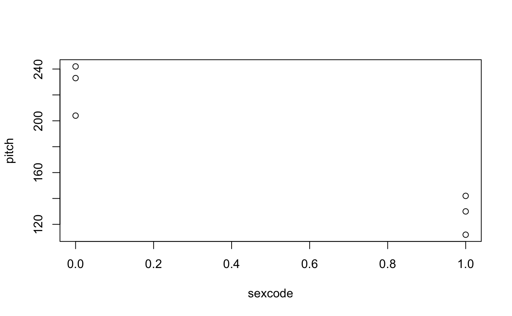
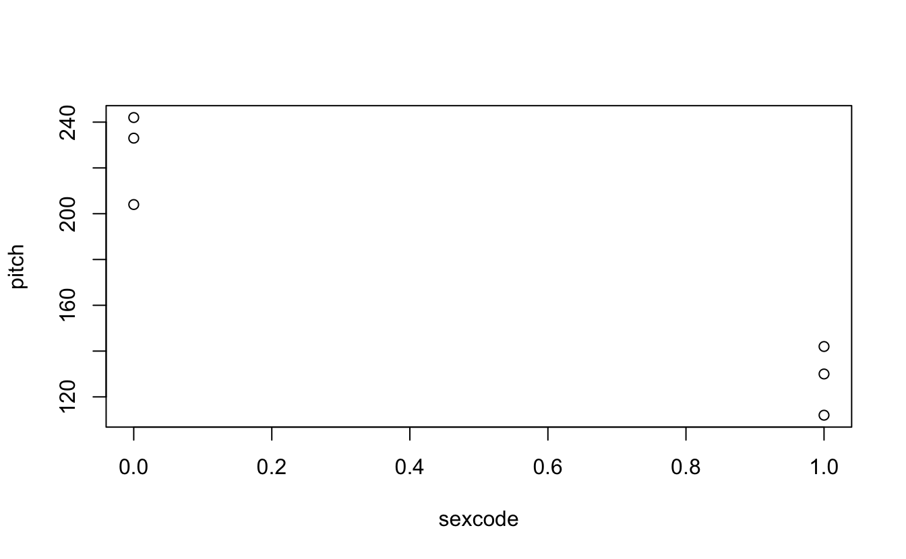
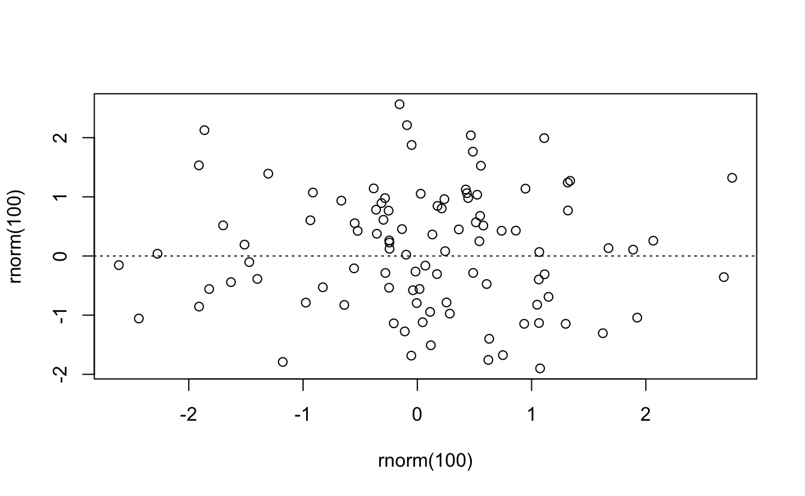
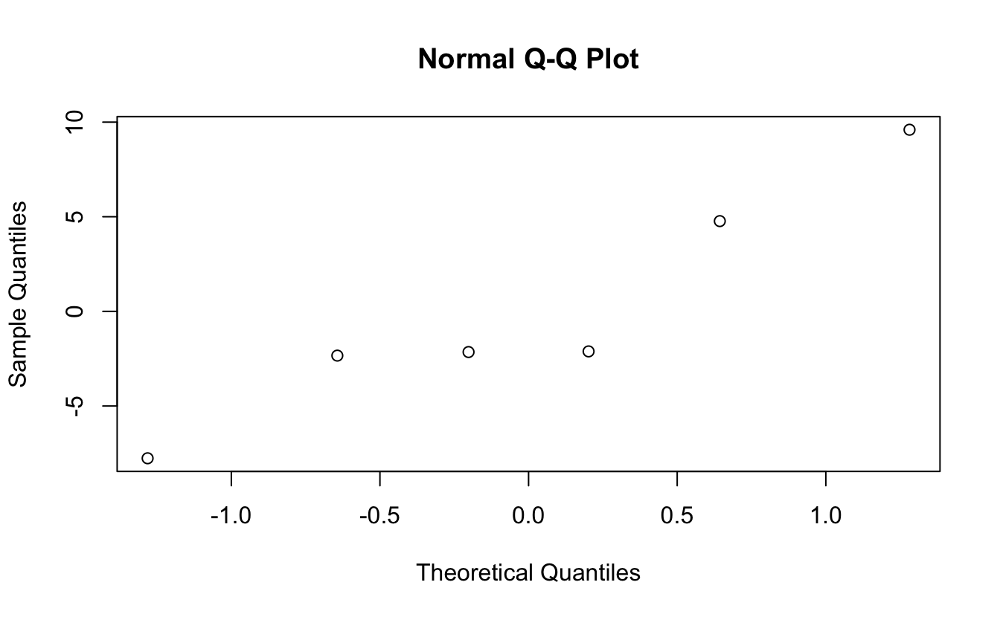
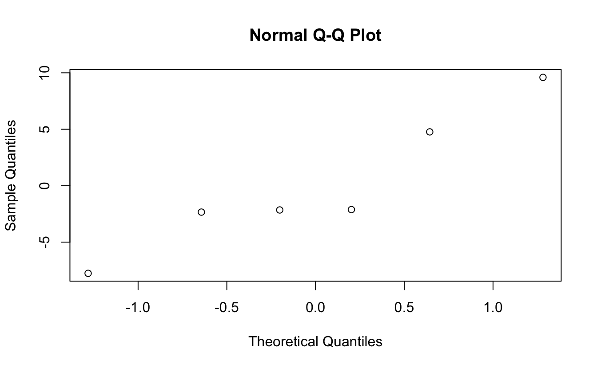
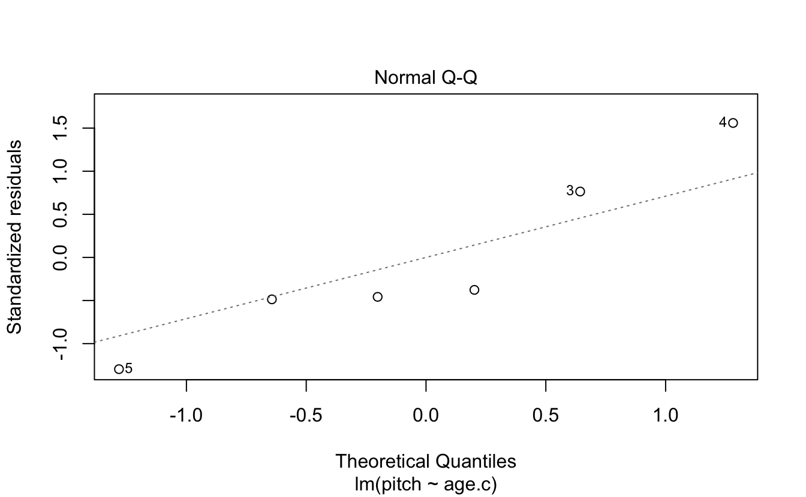
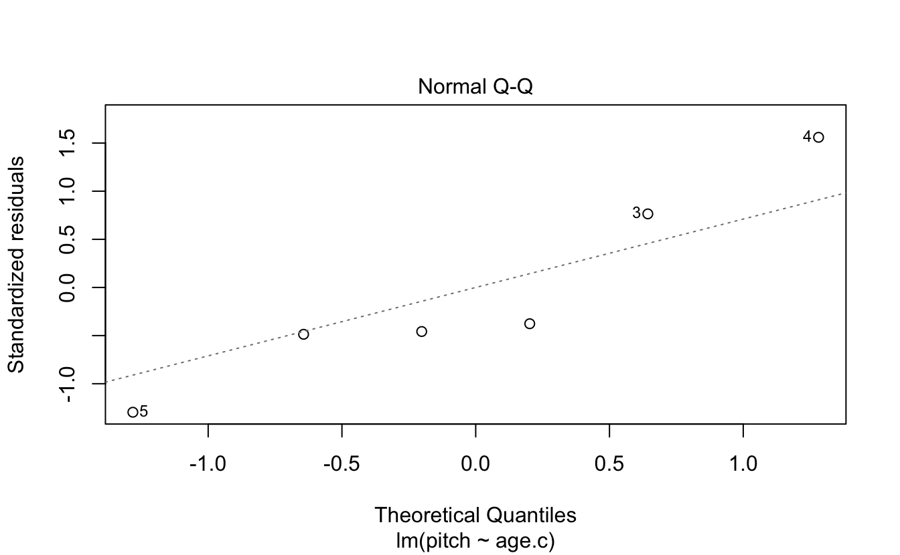
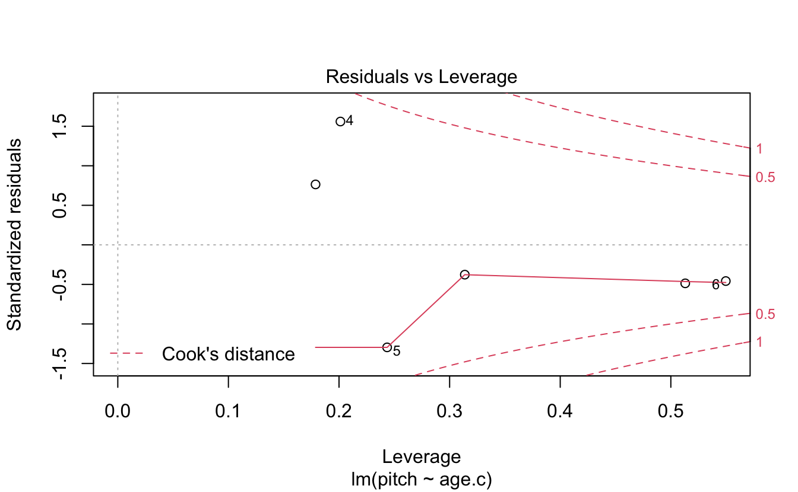
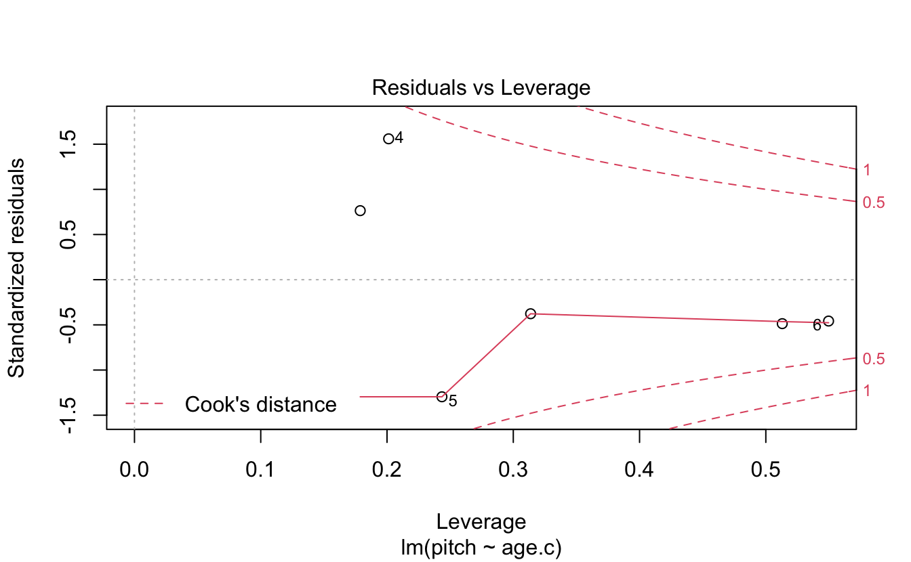

8 Linear Models
“All models are wrong, but some are useful.”— George E. P. Box
“The normality of residuals assumption is the one that is least important. Interestingly, many people seem to think it is the most important one, but it turns out that linear models are relatively robust against violations of the assumptions of normality.”— Bodo Winter
First off…
Advanced R Challenges
Create a linear model for the Navarro data set “clinical trials” that predicts how the treatment of drugs and therapy affect mood gain. Is it a good model fit? What are the outcomes? Visualize the analysis.
8.1 Step 1. Get your data
df <- data.frame(cbind(cbind(seq(1,6,1), #cbind (column bind) a seq() (sequence) from 1 to 6 by 1
sort(rep(c("female","male"),3)), #Next column: male and female sorted for 3 of each (see ?rep, ?sort)
c(233,204,242,130,112,142)))); colnames(df) <- c("Subject","Sex", "Voice.Pitch") #pitches (number)
#in Hz, also see the ; use for R and ?colnamesOR
create two vectors…
pitch = c(233,204,242,130,112,142) #You can use the "=" assignment operator, but it's not R-like
sex = c(rep("female",3),rep("male",3))
my.df = data.frame(sex,pitch) #data.frame makes the vector names column names
my.df
#> sex pitch
#> 1 female 233
#> 2 female 204
#> 3 female 242
#> 4 male 130
#> 5 male 112
#> 6 male 142O.k., now we’ll proceed with the linear model. We take our formula above and feed it into the lm() function … except that we omit the “ε” term, because the linear model function doesn’t need you to specify this.
xmdl <- lm(pitch ~ sex, my.df) #The arguments are:
# lm(formula = DV by IV,data = my.df)
summary(xmdl)
#>
#> Call:
#> lm(formula = pitch ~ sex, data = my.df)
#>
#> Residuals:
#> 1 2 3 4 5 6
#> 6.67 -22.33 15.67 2.00 -16.00 14.00
#>
#> Coefficients:
#> Estimate Std. Error t value Pr(>|t|)
#> (Intercept) 226.3 10.2 22.22 2.4e-05 ***
#> sexmale -98.3 14.4 -6.83 0.0024 **
#> ---
#> Signif. codes: 0 '***' 0.001 '**' 0.01 '*' 0.05 '.' 0.1 ' ' 1
#>
#> Residual standard error: 17.6 on 4 degrees of freedom
#> Multiple R-squared: 0.921, Adjusted R-squared: 0.901
#> F-statistic: 46.6 on 1 and 4 DF, p-value: 0.00241
# Multiple R-squared: 0.921, Adjusted R-squared: 0.9012 “Multiple R-Squared”. This refers to the statistic \(R^2\) which is a measure of “variance explained” or if you prefer less causal language, it is a measure of “variance accounted for”. \(R^2\) values range from 0 to 1.
..92.1% of the stuff that’s happening in our dataset is “explained” by our model. In this case, because we have only one thing in our model doing the explaining (the fixed effect “sex”), the \(R^2\) reflects how much variance in our data is accounted for by differences between males and females.
Challenge 1
Pick one dependent variable and one independent variable in your data.frame (It doesn’t really need to make sense for now, just that you set it up and run it.) Replace the variables with your own…
newdf <- df %>%
select(Sex,Voice.Pitch) %>%
mutate(Voice.Pitch = as.numeric(as.character(Voice.Pitch)))
#Set up your lm (linear model) object
my.lm <- lm(formula = Voice.Pitch ~ Sex, data = newdf)
summary(my.lm)
#>
#> Call:
#> lm(formula = Voice.Pitch ~ Sex, data = newdf)
#>
#> Residuals:
#> 1 2 3 4 5 6
#> 6.67 -22.33 15.67 2.00 -16.00 14.00
#>
#> Coefficients:
#> Estimate Std. Error t value Pr(>|t|)
#> (Intercept) 226.3 10.2 22.22 2.4e-05 ***
#> Sexmale -98.3 14.4 -6.83 0.0024 **
#> ---
#> Signif. codes: 0 '***' 0.001 '**' 0.01 '*' 0.05 '.' 0.1 ' ' 1
#>
#> Residual standard error: 17.6 on 4 degrees of freedom
#> Multiple R-squared: 0.921, Adjusted R-squared: 0.901
#> F-statistic: 46.6 on 1 and 4 DF, p-value: 0.00241Now back to the tutorial!
But why does it say “sexmale” rather than just “sex”, which is how we named our fixed effect? And where did the females go? If you look at the estimate in the row that starts with “(Intercept)”, you’ll see that the value is 226.33 Hz. This looks like it could be the estimated mean of the female voice pitches. If you type the following…
…you’ll get the mean of female voice pitch values, and you’ll see that this value is very similar to the estimate value in the “(Intercept)” column.
my.df$sexcode <- c(rep(0,3),rep(1,3))
scatter.smooth(x = my.df$sexcode, y = my.df$pitch, ylab = "Pitch (Hz)", xlab = "Sex")
plot(pitch~sexcode, my.df) 

Or with ggplot
coef(xmdl)
#> (Intercept) sexmale
#> 226.3 -98.3
sapply(X = my.df, class)
#> sex pitch sexcode
#> "character" "numeric" "numeric"
require(forcats)
my.df %>%
mutate(sex = fct_recode(sex, "0" = "female", "1" = "male")) %>%
mutate(sex = as.numeric(as.character(sex))) %>%
ggplot(aes(x= sex,y=pitch)) +
geom_point() +
geom_abline(intercept = coef(xmdl)[1],slope = coef(xmdl)[2]) +
theme_classic() + coord_cartesian(xlim = c(-.5,1.5), ylim = c(0,300))
Challenge 2
Why did I have to go through all this trouble of getting the slope and intercept, and then changing Sex from a categorical factor to a numerical continuous variable?
Explain the geom_abline call.
What happens if I remove the as.character(sex) from the mutate argument on line above?
my.df %>%
mutate(sex = fct_recode(sex, "0" = "female", "1" = "male")) %>%
mutate(sex = as.numeric(sex)) %>%
ggplot(aes(x= sex,y=pitch)) +
geom_point() +
geom_abline(intercept = coef(xmdl)[1],slope = coef(xmdl)[2]) +
theme_classic() + coord_cartesian(xlim = c(-.5,1.5), ylim = c(0,300))Challenge 3
How does coord_cartesian() work? Does it transform any of the stats performed?
my.df %>%
mutate(sex = fct_recode(sex, "0" = "female", "1" = "male")) %>%
mutate(sex = as.numeric(as.character(sex))) %>%
ggplot(aes(x= sex,y=pitch)) +
geom_point() +
geom_abline(intercept = coef(xmdl)[1],slope = coef(xmdl)[2]) +
theme_classic() + coord_cartesian(xlim = c(-.5,1.5), ylim = c(0,300)) +
geom_vline(aes(xintercept = 0), linetype = 2, alpha = .7) +
geom_hline(aes(yintercept = 0), linetype = 2, alpha = .7)
Challenge 4
Can you put the labels “female” and “male” back on the x-axis?
Hint: Try scale_x_…
my.df %>%
mutate(sex = fct_recode(sex, "0" = "female", "1" = "male")) %>%
mutate(sex = as.numeric(as.character(sex))) %>%
ggplot(aes(x= sex,y=pitch)) +
geom_point() +
geom_abline(intercept = coef(xmdl)[1],slope = coef(xmdl)[2]) +
theme_classic() + coord_cartesian(xlim = c(-.5,1.5), ylim = c(0,300)) +
geom_vline(aes(xintercept = 0), linetype = 2, alpha = .7) +
geom_hline(aes(yintercept = 0), linetype = 2, alpha = .7) +
scale_x_continuous(breaks = c(0,1),labels = c("female","male"))
Now back to the tutorial.
- Advantages of thinking of categorical things as slopes
- It transfers to thinking about non-categorial things as slopes.
age = c(14,23,35,48,52,67)
pitch = c(252,244,240,233,212,204)
my.df = data.frame(age,pitch)
xmdl = lm(pitch ~ age, my.df)
summary(xmdl)
#>
#> Call:
#> lm(formula = pitch ~ age, data = my.df)
#>
#> Residuals:
#> 1 2 3 4 5 6
#> -2.34 -2.15 4.77 9.60 -7.76 -2.12
#>
#> Coefficients:
#> Estimate Std. Error t value Pr(>|t|)
#> (Intercept) 267.076 6.852 39.0 2.6e-06 ***
#> age -0.910 0.157 -5.8 0.0044 **
#> ---
#> Signif. codes: 0 '***' 0.001 '**' 0.01 '*' 0.05 '.' 0.1 ' ' 1
#>
#> Residual standard error: 6.89 on 4 degrees of freedom
#> Multiple R-squared: 0.894, Adjusted R-squared: 0.867
#> F-statistic: 33.6 on 1 and 4 DF, p-value: 0.00439Challenge 5
Plot Voice Pitch by Age with a trend line.
So how does age relate to voice pitch?
Meaningful and meaningless intercepts. How can we make the intercept age = 0 more meaningful? We can center on the average age of our sample…
my.df$age.c = my.df$age - mean(my.df$age)
xmdl = lm(pitch ~ age.c, my.df)
summary(xmdl)
#>
#> Call:
#> lm(formula = pitch ~ age.c, data = my.df)
#>
#> Residuals:
#> 1 2 3 4 5 6
#> -2.34 -2.15 4.77 9.60 -7.76 -2.12
#>
#> Coefficients:
#> Estimate Std. Error t value Pr(>|t|)
#> (Intercept) 230.833 2.811 82.1 1.3e-07 ***
#> age.c -0.910 0.157 -5.8 0.0044 **
#> ---
#> Signif. codes: 0 '***' 0.001 '**' 0.01 '*' 0.05 '.' 0.1 ' ' 1
#>
#> Residual standard error: 6.89 on 4 degrees of freedom
#> Multiple R-squared: 0.894, Adjusted R-squared: 0.867
#> F-statistic: 33.6 on 1 and 4 DF, p-value: 0.00439Some assumptions
- Linearity
- Linear models assume that the relationship between your variables is linear, no way!
There are a bunch of tests you can do. Remember these residuals are how far the data point is from the linear model line.
(The red lines indicate the residual values)
ggplot(data = my.df, aes(x = age, y = pitch)) +
geom_smooth(method = "lm", size = .5, se = F, color = "black") +
geom_errorbar(aes(ymin = pitch,
ymax = pitch - resid(xmdl)), width = 0, color = "red") +
geom_point() +
geom_point(aes(y = pitch - resid(xmdl)),size = .5) +
theme_classic()
#> `geom_smooth()` using formula 'y ~ x'
resid(xmdl)
#> 1 2 3 4 5 6
#> -2.34 -2.15 4.77 9.60 -7.76 -2.12
plot(x = fitted(xmdl),y = residuals(xmdl))
abline(a = 0, b = 0, lty = 3)

- Colinearity of independent variables (or predictors)
- Well, we only have one predictor
- Heteroskedasticity
- Approximately equal variances across your sample

- Normality of residuals
 
 
 

Absence of influential data points…
dfbeta(xmdl)
#> (Intercept) age.c
#> 1 -0.800 0.0644
#> 2 -0.522 0.0274
#> 3 0.968 -0.0146
#> 4 2.003 0.0509
#> 5 -1.710 -0.0648
#> 6 -0.783 -0.0662
# (Intercept) age.c
# 1 -0.8002664 0.06437573
# 2 -0.5220150 0.02736278
# 3 0.9678744 -0.01456709
# 4 2.0026352 0.05092767
# 5 -1.7103247 -0.06479736
# 6 -0.7828787 -0.06622744Finally… Independence! Each observation must be independent from the others. We will deal with repeated measures corrections to linear models by including participants as a random effect (among other things).
8.2 Solutions
8.2.1 Challenge 2
If you look back at the box plot that we constructed earlier, you can see that the value 202.588 Hz seems to fall halfway between males and females (in the informal condition) – and this is indeed what this intercept represents. It’s the average of our data for the informal condition.
8.2.2 Challenge 3
coord_cartesian() works by changing the frame of the data without removing any data points from the summary statistics, such as the best-fit line. So even if the data points are not plotted within the graph, the best-fit line still accounts for the points not shown when its slope is calculated.
8.2.3 Challenge 4
my.df %>%
mutate(sex = fct_recode(sex, "0" = "female", "1" = "male")) %>%
mutate(sex = as.numeric(as.character(sex))) %>%
ggplot(aes(x= sex,y=pitch)) +
geom_point() +
geom_abline(intercept = coef(xmdl)[1],slope = coef(xmdl)[2]) +
theme_classic() + coord_cartesian(xlim = c(-.5,1.5), ylim = c(0,300)) +
geom_vline(aes(xintercept = 0), linetype = 2, alpha = .7) +
geom_hline(aes(yintercept = 0), linetype = 2, alpha = .7) +
scale_x_continuous(breaks = c(0,1),labels = c("female","male"))